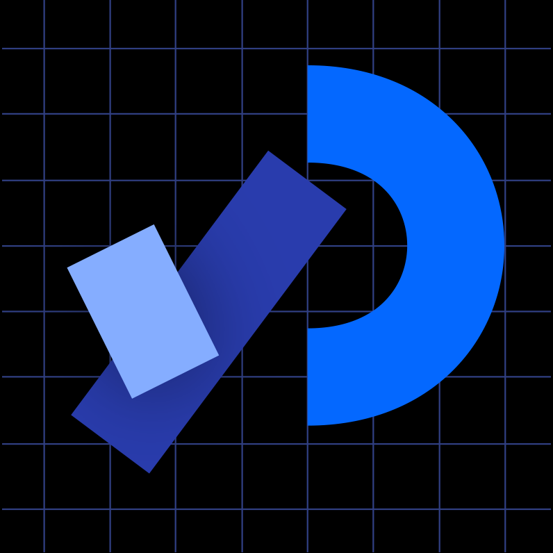
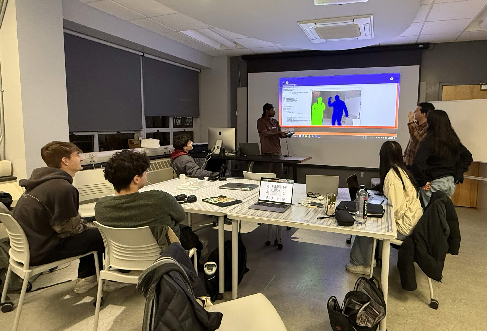

About

6 students at Binghamton University, with the assistance of 2 professors in the Art & Design and Digital & Data Studies Department, designed 5 projects using the open source programming language Processing to create an interactive experience at Stellar Human that explores themes of community and collective memory related to the Binghamton area.
This interactive media art installation was open to the public from 4.24.2026 to 4.25.2026.

Our Project Timeline
This 5-month long project initially started as a Processing study group during the Fall 2025 semester which then evolved into looking for physical spaces to project our works and receiving additional funding from Binghamton's School of the Arts.